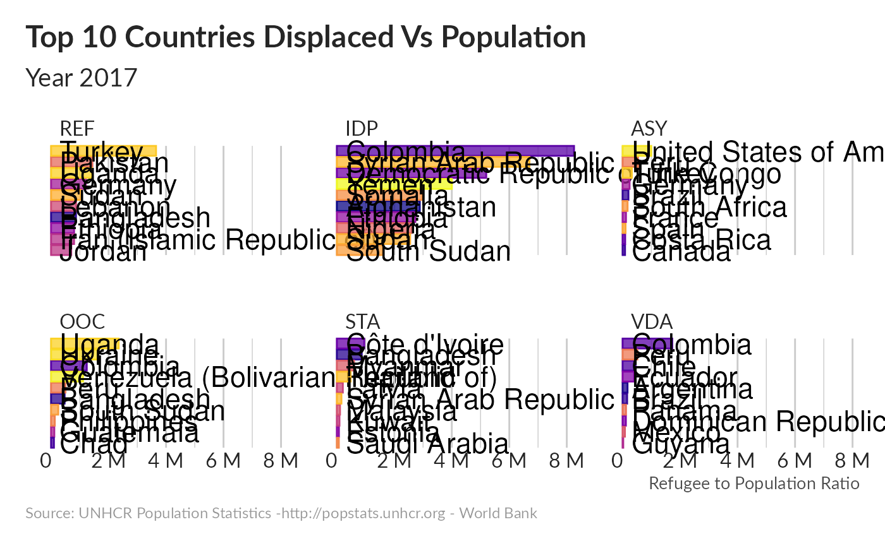

Note that you can find the source code for all the chart below in the Repository.
“Bar Chart Race” are a specific type of bar chart that moves to show rankings over time. It became recently a quite popular approach to bring a storytelling elements within a longitudinal dataset. Readers are suggested to connect and combine what they see on the chart with other qualitative elements that they know about (elements of history). By using the allegory of F1 Race, it gives a very dynamic visualisation dimension.
With R, it’s fairly easy to reproduce such visualization - We will show here how to use gganimate R packages to display evolution of refugees & IDP’s number over time based on UNHCR statistics
The visualization below uses data from UNHCR and data.worldbank API
Top Countries for each statistical categories
UNHCR’s populations of concern status includes:
Refugees (REF) include individuals recognized under the 1951 Convention relating to the Status of Refugees; its 1967 Protocol; the 1969 OAU Convention Governing the Specific Aspects of Refugee Problems in Africa; those recognised in accordance with the UNHCR Statute; individuals granted complementary forms of protection; or those enjoying temporary protection. Since 2007, the refugee population also includes people in a refugee-like situation.
Asylum-seekers (ASY) are individuals who have sought international protection and whose claims for refugee status have not yet been determined, irrespective of when they may have been lodged.
Internally displaced persons (IDP) are people or groups of individuals who have been forced to leave their homes or places of habitual residence, in particular as a result of, or in order to avoid the effects of armed conflict, situations of generalised violence, violations of human rights, or natural or man-made disasters, and who have not crossed an international border. For the purposes of UNHCR’s statistics, this population only includes conflict-generated IDPs to whom the Office extends protection and/or assistance. Since 2007, the IDP population also includes people in an IDP-like situation. For global IDP estimates, see www.internal-displacement.org.
Stateless persons (STA) are defined under international law as persons who are not considered as nationals by any State under the operation of its law. In other words, they do not possess the nationality of any State. UNHCR statistics refer to persons who fall under the agency’s statelessness mandate because they are stateless according to this international definition, but data from some countries may also include persons with undetermined nationality.
Others of concern (OOC) refers to individuals who do not necessarily fall directly into any of the groups above, but to whom UNHCR extends its protection and/or assistance services, based on humanitarian or other special grounds.
Venezuelan Displaced Abroad (VDA): People displaced across borders: According to interviews and protection monitoring exercises conducted by UNHCR and partners, Venezuelans claim that they are leaving the country for a variety of reasons, including persecution on account of their individual profiles, insecurity and violence, lack of access to food, medicine and essential services, as well as loss of income as a result of the current human rights, political and socioeconomic situation in Venezuela. Based on these reports, as well as reliable information in the public domain from a wide range of sources about the situation in Venezuela, UNHCR considers that for a number of profiles, international protection considerations are likely to arise under the 1951 Convention/1967 Protocol relating to the Status of Refugees depending on the circumstances of the individual case. While individual circumstances and reasons for departure from Venezuela vary, UNHCR considers that the majority of Venezuelan nationals, or stateless persons who were habitually resident in Venezuela, are in need of international protection under the criteria contained in the Cartagena Declaration on the basis of threats to their lives, security or freedom resulting from the events that are currently seriously disturbing public order in Venezuela.



How many IDPs in relation with the wealth of host population?

Annexes
For animation, the main challenge is to tune parameters.
- use geom_tile, not geom_bar as this allows for better transitions within gganimate
- gganimate functions transition_time and ease_aes handle the animation and transition between bars. The settings here worked well for my purposes, but dig into these functions to get an overview of different options
- nframes and fps parameters to the animate function control the speed of transitions. One mistake I made here initially was to set nframes equal to the number of years in the dataset. This works, but because there is only 1 frame per year, you don’t get the smooth transitions that I wanted in this graph. Increasing the number of frames fixed that issue.
nframes : The number of frames to render (default 100)
fps : The framerate of the animation in frames/sec (default 10)
and animate…. the bar chart race…